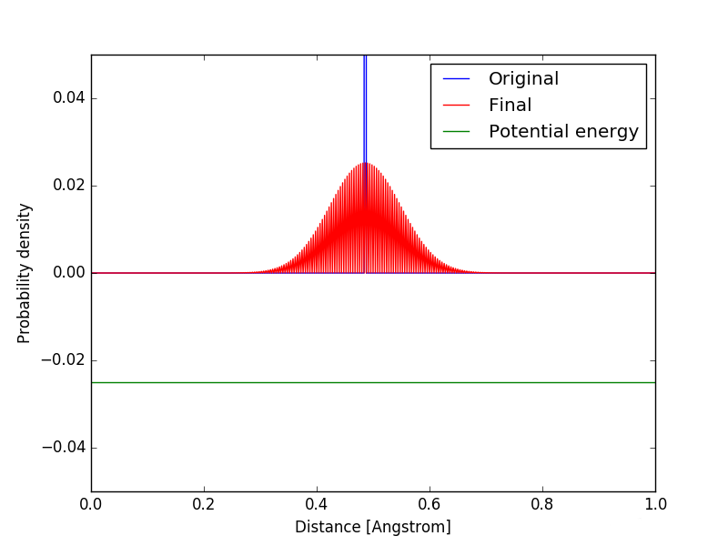
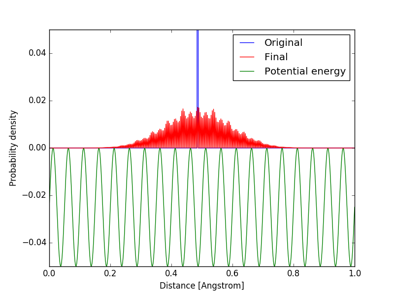
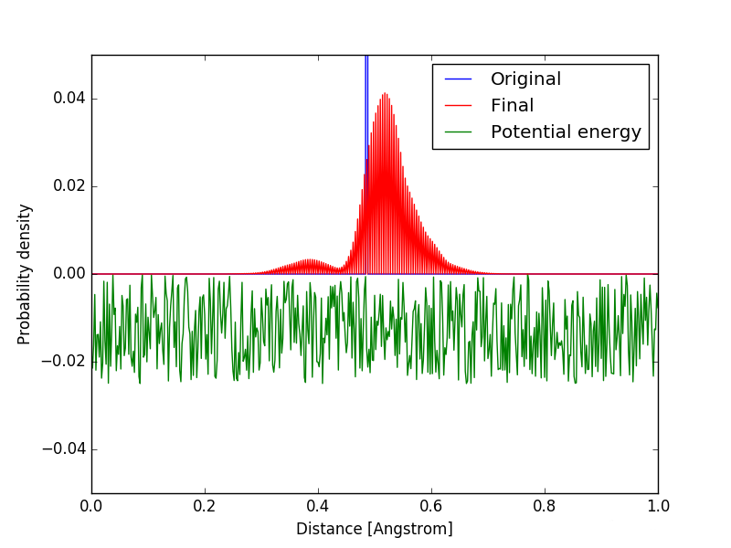

Anderson Localization is intrinsically wave phenomena, so, lets start with common example - a stone thrown into the water. This causes a ripple to spread accross the water surface, travelling in all directions until it fades away.
Now imagine a different surface, where several small rocks peek above the water level. When we throw our stone now in between these "impurities", wave is scattered off the rocks and creates more complex pattern. Also, it takes a longer time for some ripples to get further away from the point of stone impact.
Anderson localization very generally describes similar phenomena. It predicts that certain amplitude in a medium only decays with time if the medium is not very chaotic - mainly consists of either flat or periodic structures. If the medium contains many impurities (pebbles), without friction, the amplitude of the wave at the place might not decay at all!
Originally (in P. W. Anderson's article Absence of diffusion in certain random lattices from 1958), the Anderson localization was derived from Schrödinger equation, thus applying mainly to quantum particles. However, the same physics can be applied to a general wave, and we can observe Anderson localization in many situations.
To better visualize Anderson localization, simple computer simulations of behaviour of quantum particles - matter waves are presented below. The Schrödinger equation (equation ruling the motion in quantum mechanics) was used to model a particle spreading from the original position (marked by blue line) over time. The particle is represented here by a probability density, which, at every point, is proportional to the probability of observing the particle at said point. At the beginning, the particle is known to be at some starting position, so the probability density peaks highly at the starting point. After some time, particle can be somewhere else as well - probability density is more spread. The width of this spread is what concerns us here.
  The images at the top were taken before the images at the bottom. Furthemore, the potential energy of the particle in the region has different profiles, shown in the lower part of the picture.
The probability density of the particle at the constant and periodic potential keeps spreading, while the particle at random potential does not spread nearly as much. In fact, if we looked at how the probability density will look in very long time, only the random potential will have noticible peaks, in the other two situations, the particle will spread out much more - the particle wave undergoes diffusion.
Here, the random potential is completly random, which makes it easy to observe the localization in early simulation time. But, the potential does not need to be completly random. If there are only small random variations in the potential, the wave still localizes in one dimension, only the localization length grows.
For classical systems, we would have to start from a different wave equation, but it turns out that the Anderson localization works similarly for classical waves. And as some of the properties of localization, such as Anderson transition, have predictions that are irrespective of the specific system, the same computational predictions can be verified by observations of both classical and quantum systems, which has also been done.
Since its theoretical prediction, Anderson localization has been applied to several different problems. First, and perhaps the one that it was originally supposed to solve, was explanation of conductivity, or, in fact, the lack thereof, of certain materials. If the atoms in the material are effectively in one line or one plane (system has only 1 or 2 dimensions), the localization occurs even for very small disorder - very small random fluctuations of potential energy due to impurities. If the atoms are in whole space (3 dimensions), than there is certain amount of randomness beyond which the electrons in the material never diffuse. When the disorder is crossing this amount, we talk about Anderson transition. Interestingly, Anderson transition predicts an explicit form of dependence of maximum width of the wave (called localization length) on the amount of disorder in the system, which does not depend on the inner structure of the system - the phenomena is common for different types of waves.
Then, one would expect to find some classical system where the transition occurs as well, and indeed the same observation has also been made for ultrasound in disorder lattice of small aluminum beads.
The localization of sound can be then used in designing a sound insulation - the waves cannot diffuse in a disordered insulation, and are effectively trapped in it until they dissappear due to dissipative effects.
But even though more than fifty years have passed since the original article, there are still unsolved questions in the field. For example, what happens, when we take into account the interaction of electrons with themselves in the lattice? Or if we can measure localization of mechanical waves, could we perhaps measure localization of seismic waves? And what about very cold atoms - by de Broglie relation, they have quite a big wavelength, could we perhaps localize them? Active research is still going on as of creation of this factsheet and the field is still very much alive.
And how exactly can one show that waves localize in such way? Unfortunately, rigid derivation of these results requires more advanced mathematics, such as Laplace transforms and solution of Schrödinger wave equation, so it is not given here. If the reader is interested in this type of derivation, the original Anderson's article is quite extensive in description of the mathematical method. Also, this site provides a handfull introduction and comparisson to classical particle diffusion (http://indico.ictp.it/event/a09171/session/5/contribution/3/material/0/0.pdf).
Also, for more complete summary of the progress in the field in the last 50 years, visit this site, where the not so well known areas of the subject are also mentioned (http://ps.nano-cops.com/sites/default/files/Fifty%20years%20of%20Anderson%20localization.pdf).